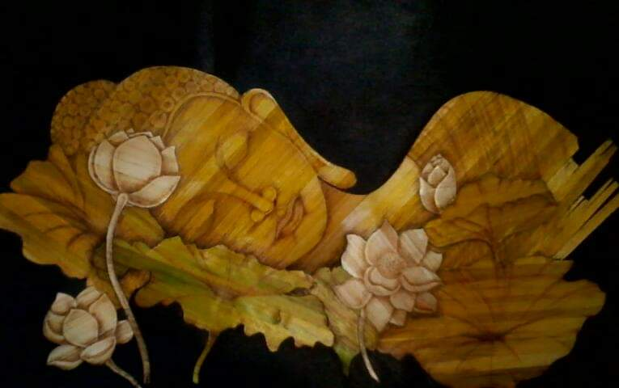
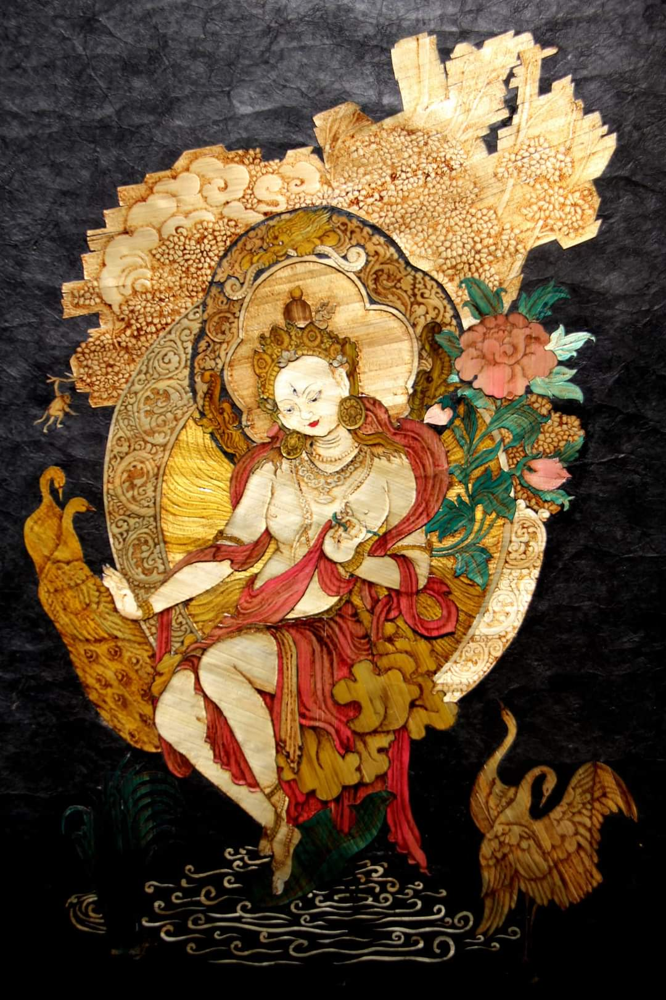
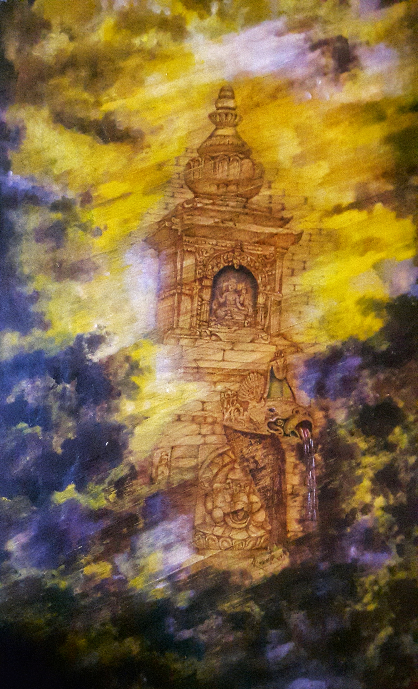
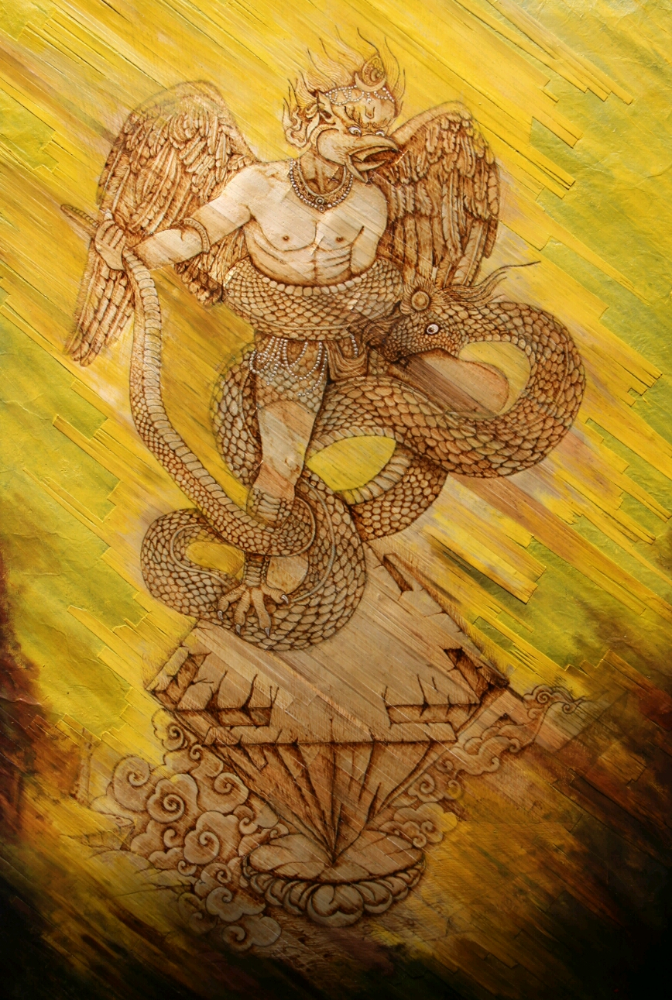

I'm valley based artist &
photographer creating awesome painting, sketch & stulpture
art. Let's start scrolling and learn more
about me
about me
नमस्ते म राजेश महर्जन - एक चित्रकार, छ्वालि चित्रकार, फोटोग्राफर।
I am Rajesh Maharjan from Maharajgunj, Kathmandu. I am calm and relaxed
person. I have a lot of interest in Chwali arts and have been involving
in arts since last seventeen years. It is my own creation as I have not
learned about it from anybody so I am inspired by myself. Talking about
Chwali, it is a part of wheat plant called stems.Once farmers harvest
the plant, they will dried the stems and will used for thatching roofs.
And Chwali artists will utilize it which also helps to prevent it from
going to waste. The colour of dried stems are light golden shimmering so
the art of Chwali looks more attractive. Straw painting are craft
objects made by shaping straw into the paterns and represntaional
images. Wheat-straw is a very specific art of weaving straw into
pictures by using and combining the nature. Chhwali craft in nepal is a
unique approach to transform craft at a new level. Most straw artist
used the method of cutting straw and finishing the design. My craft on
the other hand is focused on painting the straw itself and giving the
design. Most probably this is the first time in nepal anybody has used
this technique of chhwali craft. My workshop is situated at kathmandu.
why is my art unique ?
नमस्ते म राजेश महर्जन - एक चित्रकार, छ्वालि चित्रकार, फोटोग्राफर।
Wheat-straw is a very specific art of weaving straw into pictures by
using and combining the nature. Chhwali craft in nepal is a unique
approach to transform craft at a new level. Most straw artist used the
method of cutting straw and finishing the design. My craft on the other
hand is focused on painting the straw itself and giving the design. Most
probably this is the first time in nepal anybody has used this technique
of chhwali craft. My workshop is situated at kathmandu.
mahadev




मेरो छ्वाली कलामा विशेषता के छ त?
धेरै जस्तो छ्वालि चित्रकार छ्वालि काटेर चित्र सक्काउ छन् तर मेरो चित्र
विशेष गरी चित्रलाई नै ध्यानमा राखेर र